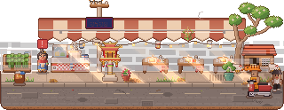
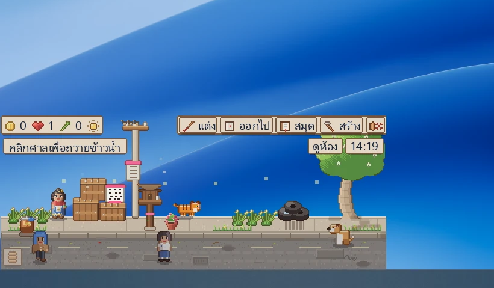
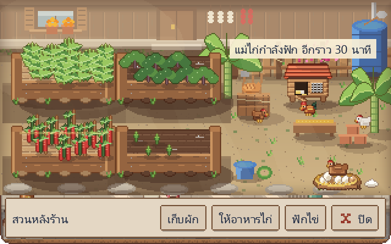
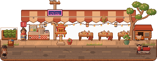
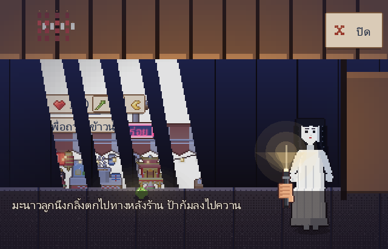

ร้านข้าวเล็กๆ ในซอยไทย ที่นั่งอยู่มุมจอคุณ ลูกค้าประจำแก่ลงทุกวัน และบางคนกลับมาหาป้าอีกครั้งตอนกลางคืน

เริ่มจากลานว่างในซอย เก็บของ ขายของ แล้วสร้างรถเข็น แผงลอย จนเป็นร้าน
อยู่ตรงไหนของจอ
ปล่อยไว้เฉยๆ ก็มีแค่ร้าน ไม่มีกรอบ ไม่มีพื้นหลัง อยู่บนสุดเสมอ เอาเมาส์ไปใกล้ แถบเมนูจะโผล่มา

- เปิดครั้งแรกร้านอยู่มุมขวาล่าง เหนือแถบงานพอดี
- ย้ายร้าน: ลากป้า หรือปุ่มลูกศรสี่ทางมุมซ้ายล่าง เกมจำตำแหน่งให้
- คลิกที่ว่างรอบร้านทะลุไปถึงโปรแกรมข้างหลัง
- อยากได้ใหญ่ขึ้น ตั้งได้ถึง 4 เท่าในตั้งค่า
ทำกับข้าวเองผ่านมือป้า ทอดไข่ ผัดกะเพรา โยนกระทะ ทำดีขายได้แพงขึ้น ยุ่งอยู่ก็ปล่อยให้ป้าทำเอง


ปลูกผักบุ้ง กะเพรา พริก ตะไคร้ เลี้ยงไก่เก็บไข่ ฟักลูกเจี๊ยบแล้วตั้งชื่อเอง

ฝน หมอกเช้า ลมหนาว ตามฤดูไทยจริง ทุกคนเห็นฝนห่าเดียวกันในวันเดียวกัน ลอยกระทงมาตามปฏิทินจริง

ขาประจำห้าคนมีชีวิตตามวันจริง หนึ่งวันคือหนึ่งปีของเขา แก่ขึ้น เปลี่ยนงาน แล้วมาเล่าให้ป้าฟัง
ลุงเฉลิม: สมัยหนุ่มลุงกินร้านสมศรีทุกเย็น
ตัวอย่าง
- เวลาในเกมตามนาฬิกาเครื่องคุณ
- ปิดเกมไป ร้านยังเดินต่อ กลับมาป้าเล่าให้ฟังว่าเกิดอะไรขึ้น
- กดตัวเลขผักบนแถบเพื่อดูคลังของ สมุดป้านับวันของร้าน
- ไม่มีโฆษณา ไม่มีเติมเงิน


กลางคืนไฟติด บางคืนผีไทยแวะมา คืนละครั้ง ถ้าคุณคลิกเอง ไม่มีอะไรกระโดดใส่ ไม่อยากเจอก็เปิดโหมดกันรำคาญ
- กดดาวน์โหลด แล้วเปิดไฟล์ RanNeeLae-Setup.exe
- ถ้า Windows ขึ้นว่า “Windows ป้องกันพีซีของคุณ” กด “ข้อมูลเพิ่มเติม” แล้ว “เรียกใช้ต่อไป” เกมไม่มีใบรับรองรายปีแบบเสียเงิน Windows จึงเตือนครั้งแรก
- ติดตั้งจนจบ แล้วเปิดเกมจากไอคอนไก่ในเมนูเริ่ม ไม่ต้องใช้สิทธิ์แอดมิน
คำถามที่พบบ่อย
อัปเดตยังไง
ไม่ต้องโหลดใหม่ทั้งเกม เปิดเกมแล้วถ้ามีรุ่นใหม่ ปุ่ม “โหลดอัปเดต” จะขึ้นใต้แถบบน อัปเดตเล็กและมีลายเซ็น เกมตรวจลายเซ็นทุกครั้ง กดแล้วเปิดเกมใหม่ ปิดการเช็กได้ในตั้งค่า ตัวติดตั้งในหน้านี้เป็นรุ่นล่าสุดเสมอ
เกมใช้อินเทอร์เน็ตทำอะไร
เช็กอัปเดตตอนเปิดเกมอย่างเดียว เซฟอยู่ในเครื่องคุณ ไม่ส่งอะไรออกไป
ถอนการติดตั้งแล้วเซฟหายไหม
ถอนที่ การตั้งค่า › แอป › ร้านนี้แหละ ตัวถอนจะถามก่อนว่าจะลบเซฟไหม เก็บไว้ ติดตั้งใหม่ก็เล่นต่อได้
รู้ได้ไงว่าไฟล์ไม่ถูกแก้
เทียบ SHA-256 ของไฟล์กับ SHA256SUMS.txt ในหน้ารุ่นทั้งหมด
เจอปัญหา หรืออยากบอกอะไร
เขียนในความเห็นข้างล่างได้เลย หรือเปิด Issue บน GitHub ภาษาไทยหรืออังกฤษก็ได้ เกมยังเป็นรุ่นทดสอบ ทุกความเห็นช่วยได้มาก
คุยกันหน่อย
- กำลังโหลด…